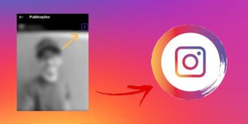

Como postar foto inteira no Instagram em 1 minuto em 2022
Sem dúvidas, a publicação de fotos é uma das ações mais realizadas pelos usuários no Instagram, sendo essa a proposta original da rede social desde do momento de sua criação lá em 2010. Mas muitos ainda não sabem como postar foto inteira no Instagram. Você assim como eu bem sabe como é frustrante acabar postando […]

Aprenda definitivamente como criar localização no Instagram em 2022
Por mais que os usuários possam colocar o estado ou município que estão no momento em suas publicações do Instagram, eles não podem fazê-lo de forma precisa, isto é, personalizando tal informação. Por isso, muitos perguntam-se: “como criar localização no Instagram”. Certamente, existem ótimas funcionalidades à disposição dos usuários do Instagram. Os desenvolvedores trabalham arduamente […]
Como saber quem visitou meu perfil no Instagram? A melhor maneira
De fato, muitos usuários do Instagram perguntam-se: “como saber quem visitou meu perfil no Instagram?” Alguns porque não querem pessoas indesejadas visualizando seus conteúdos, outros porque utilizam a rede social profissionalmente e poderiam reunir informações preciosas acerca de seu público-alvo por meio de uma função como essa. Infelizmente, não existe nenhuma maneira nativa do Instagram […]

Passo a passo sobre como desarquivar foto do Instagram em 2022
Veja rapidamente como desarquivar foto do Instagram dentro do próprio app. Às vezes, você está dando um tempo no seu relacionamento com a namorada(o), brigou com um amigo(a) ou quer mudar a proposta de seu perfil para um estilo mais profissional. Seja como for, você pode arquivar quantas fotos quiser, em vez de excluí-las da […]

Como marcar alguém no Instagram [Feed, Story e Comentário]
Assim como nas demais redes sociais, no Instagram, é possível marcar pessoas para verem determinado conteúdo ou como forma de referenciá-la na publicação. No entanto, muitos não sabem como marcar alguém no Instagram, principalmente porque existe mais de um método para fazê-lo. Nesse sentido, quem ainda não tem tanta intimidade com as funcionalidades disponíveis na […]
Como colocar link no stories do instagram de forma prática
“Como colocar link no stories do Instagram” é uma das perguntas mais comuns entre os usuários da rede social. Principalmente, porque até pouco tempo atrás essa opção estava restrita para a maioria das contas da plataforma sendo necessário ter um número específico de seguidores para fazê-lo. Ainda assim, vários usuários buscavam formas de utilizar o […]
Tutorial de como colocar link do whatsapp no Instagram em 2022
Embora o Instagram seja uma rede social com a essência de fotos e vídeos comuns, há tempos ela tornou-se uma grande ferramenta para relações comerciais. Assim, aprender a como colocar link do Whatsapp no Instagram é importante para profissionais e empresas. Antigamente, o Instagram era mais exigente em relação a links que levassem seus seguidores […]
Como recuperar mensagens apagadas do Instagram facilmente em 2022
De fato, o Direct é uma das principais ferramentas do Instagram, sendo essencial para gerar mais impressões e engajamento para os perfis da plataforma. Porém, como toda funcionalidade, há processos em que os usuários ficam com muitas dúvidas, a exemplo de como recuperar mensagens apagadas do Instagram. Atualmente, esse processo pode ser feito somente pelo […]

Instagram Ads: como anunciar, escalar e vender mais em 2022
Por mais que o Instagram seja uma rede social com a essência de descontração e leveza, nos negócios ele é visto como um canal de comunicação comercial. Isso porque, pode-se aproveitar os recursos da plataforma para promover produtos, serviços e marcas. Sendo o Instagram ads, um dos principais meios de fazê-lo. Segundo dados publicados pela […]

Instagram: Um Guia Completo Sobre a Plataforma para 2022
O Instagram é uma das plataformas digitais mais aclamadas do momento. De acordo com o Sprout Social, uma empresa de software de Chicago, há mais de 1 bilhão de usuários ativos da rede social em todo o mundo. Trata-se de um número de engajamento surpreendente. Isso porque, chega a ser cerca de 15 vezes maior […]
Feed do Instagram: O que Publicar e como Deixá-lo Organizado
O Instagram é uma plataforma repleta de funcionalidades essenciais para tornar-se relevante. Empresas, profissionais ou pessoas comuns podem utilizá-las para aumentar seus seguidores, engajamento e resultados. E o feed do Instagram é uma das principais ferramentas disponíveis para fazê-lo. No feed do Instagram, encontra-se todas as publicações já feitas pelo perfil na rede social. Trata-se […]
Social Media: O que é Preciso Saber para se Tornar um em 2022?
À medida que o mundo foi sendo digitalizado após o advento da pandemia da Covid-19, a internet tornou-se um oceano de oportunidades. Existem novas estratégias, métodos de venda e profissões ― a exemplo do Social Media ― disponíveis para profissionais e empresas potencializarem seus resultados. Não à toa, ambos estão utilizando as redes sociais como […]